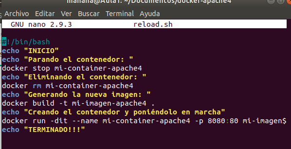

Tema 5- HTTP
Práctica: creación de apache4 en docker.
Creamos o copiamos el fichero de configuración de apache donde se encuentre el Dockerfile.
Y modificamos el Dockerfile.
Añadimos el archivo oculto .htpasswd
Y lo añadimos al Dockerfile
Añadimos lo siguiente al fichero de configuración para que tenga efecto la autenticación.
Creamos un fichero para automatizar los cambios que se realizan en el servidor/contenedor llamado reload.sh

Después tenemos que crear la auntenticación DIGEST de la siguiente manera:
Modificamos el Dockerfile,
y el fichero de configuración para que haga efecto
También modificamos el reload.sh para que genere la seguridad SSL cada vez que iniciamos el servidor/contenedor.
Y también tenemos que modificar el Dockerfile y el fichero de configuración para que haga efecto.
Tras esto realizaremos el reload.sh y ya estaría el servidor apache instalado.